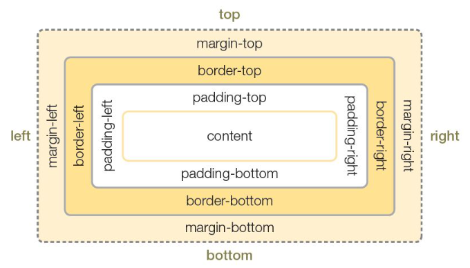

모든 html 요소는 박스로 구성되며 이를 박스 모델이라고 함
content, padding, border, margin으로 구성됨
웹 디자인의 핵심은 컨텐츠를 담을 박스모델(블록, 인라인 등)을 정의하고
CSS 속성으로 스타일과 위치, 정렬을 수행하는 것임.
박스모델을 통해 텍스트, 이미지, 테이블 등의 요소를 배치할 수 있고
이 것을 통해 웹페이지의 레이아웃을 구성할 수 있음
width, height 속성으로 요소의 너비와 높이를 설정
단,block 요소에서만 설정 가능
지정한 요소의 크기보다 내용이 많으면 요소 밖으로 벗어나 넘칠 수 있음
(overflow 속성을 이용하면 넘친 내용을 감출 수 있음)
margin과 padding으로 여백을 설정할 수 있음
박스 내용을 기준으로 4방향(위/오른쪽/아래/왼쪽 순서)으로 설정 가능
단축 표기식으로 간단하게 설정 가능
ex) {padding: 2px 1px 2px 1px;}
국가유공자·상이군경 및 전몰군경의 유가족은 법률이 정하는 바에 의하여 우선적으로 근로의 기회를 부여받는다. 모든 국민은 직업선택의 자유를 가진다. 이 헌법시행 당시에 이 헌법에 의하여 새로 설치될 기관의 권한에 속하는 직무를 행하고 있는 기관은 이 헌법에 의하여 새로운 기관이 설치될 때까지 존속하며 그 직무를 행한다. 국민경제의 발전을 위한 중요정책의 수립에 관하여 대통령의 자문에 응하기 위하여 국민경제자문회의를 둘 수 있다. 모든 국민은 거주·이전의 자유를 가진다. 국무총리는 국회의 동의를 얻어 대통령이 임명한다. 국가는 국민 모두의 생산 및 생활의 기반이 되는 국토의 효율적이고 균형있는 이용·개발과 보전을 위하여 법률이 정하는 바에 의하여 그에 관한 필요한 제한과 의무를 과할 수 있다.
국가유공자·상이군경 및 전몰군경의 유가족은 법률이 정하는 바에 의하여 우선적으로 근로의 기회를 부여받는다. 모든 국민은 직업선택의 자유를 가진다. 이 헌법시행 당시에 이 헌법에 의하여 새로 설치될 기관의 권한에 속하는 직무를 행하고 있는 기관은 이 헌법에 의하여 새로운 기관이 설치될 때까지 존속하며 그 직무를 행한다. 국민경제의 발전을 위한 중요정책의 수립에 관하여 대통령의 자문에 응하기 위하여 국민경제자문회의를 둘 수 있다. 모든 국민은 거주·이전의 자유를 가진다. 국무총리는 국회의 동의를 얻어 대통령이 임명한다. 국가는 국민 모두의 생산 및 생활의 기반이 되는 국토의 효율적이고 균형있는 이용·개발과 보전을 위하여 법률이 정하는 바에 의하여 그에 관한 필요한 제한과 의무를 과할 수 있다.
국가유공자·상이군경 및 전몰군경의 유가족은 법률이 정하는 바에 의하여 우선적으로 근로의 기회를 부여받는다. 모든 국민은 직업선택의 자유를 가진다. 이 헌법시행 당시에 이 헌법에 의하여 새로 설치될 기관의 권한에 속하는 직무를 행하고 있는 기관은 이 헌법에 의하여 새로운 기관이 설치될 때까지 존속하며 그 직무를 행한다. 국민경제의 발전을 위한 중요정책의 수립에 관하여 대통령의 자문에 응하기 위하여 국민경제자문회의를 둘 수 있다. 모든 국민은 거주·이전의 자유를 가진다. 국무총리는 국회의 동의를 얻어 대통령이 임명한다. 국가는 국민 모두의 생산 및 생활의 기반이 되는 국토의 효율적이고 균형있는 이용·개발과 보전을 위하여 법률이 정하는 바에 의하여 그에 관한 필요한 제한과 의무를 과할 수 있다.
국가유공자·상이군경 및 전몰군경의 유가족은 법률이 정하는 바에 의하여 우선적으로 근로의 기회를 부여받는다. 모든 국민은 직업선택의 자유를 가진다. 이 헌법시행 당시에 이 헌법에 의하여 새로 설치될 기관의 권한에 속하는 직무를 행하고 있는 기관은 이 헌법에 의하여 새로운 기관이 설치될 때까지 존속하며 그 직무를 행한다. 국민경제의 발전을 위한 중요정책의 수립에 관하여 대통령의 자문에 응하기 위하여 국민경제자문회의를 둘 수 있다. 모든 국민은 거주·이전의 자유를 가진다. 국무총리는 국회의 동의를 얻어 대통령이 임명한다. 국가는 국민 모두의 생산 및 생활의 기반이 되는 국토의 효율적이고 균형있는 이용·개발과 보전을 위하여 법률이 정하는 바에 의하여 그에 관한 필요한 제한과 의무를 과할 수 있다.
국가유공자·상이군경 및 전몰군경의 유가족은 법률이 정하는 바에 의하여 우선적으로 근로의 기회를 부여받는다. 모든 국민은 직업선택의 자유를 가진다. 이 헌법시행 당시에 이 헌법에 의하여 새로 설치될 기관의 권한에 속하는 직무를 행하고 있는 기관은 이 헌법에 의하여 새로운 기관이 설치될 때까지 존속하며 그 직무를 행한다. 국민경제의 발전을 위한 중요정책의 수립에 관하여 대통령의 자문에 응하기 위하여 국민경제자문회의를 둘 수 있다. 모든 국민은 거주·이전의 자유를 가진다. 국무총리는 국회의 동의를 얻어 대통령이 임명한다. 국가는 국민 모두의 생산 및 생활의 기반이 되는 국토의 효율적이고 균형있는 이용·개발과 보전을 위하여 법률이 정하는 바에 의하여 그에 관한 필요한 제한과 의무를 과할 수 있다.
국가유공자·상이군경 및 전몰군경의 유가족은 법률이 정하는 바에 의하여 우선적으로 근로의 기회를 부여받는다. 모든 국민은 직업선택의 자유를 가진다. 이 헌법시행 당시에 이 헌법에 의하여 새로 설치될 기관의 권한에 속하는 직무를 행하고 있는 기관은 이 헌법에 의하여 새로운 기관이 설치될 때까지 존속하며 그 직무를 행한다. 국민경제의 발전을 위한 중요정책의 수립에 관하여 대통령의 자문에 응하기 위하여 국민경제자문회의를 둘 수 있다. 모든 국민은 거주·이전의 자유를 가진다. 국무총리는 국회의 동의를 얻어 대통령이 임명한다. 국가는 국민 모두의 생산 및 생활의 기반이 되는 국토의 효율적이고 균형있는 이용·개발과 보전을 위하여 법률이 정하는 바에 의하여 그에 관한 필요한 제한과 의무를 과할 수 있다.
내용과 안쪽 여백을 둘러싸는 테두리의 스타일 지정
ex){border : "선두께" "선종류" "선색상"}
국가유공자·상이군경 및 전몰군경의 유가족은 법률이 정하는 바에 의하여 우선적으로 근로의 기회를 부여받는다. 모든 국민은 직업선택의 자유를 가진다. 이 헌법시행 당시에 이 헌법에 의하여 새로 설치될 기관의 권한에 속하는 직무를 행하고 있는 기관은 이 헌법에 의하여 새로운 기관이 설치될 때까지 존속하며 그 직무를 행한다. 국민경제의 발전을 위한 중요정책의 수립에 관하여 대통령의 자문에 응하기 위하여 국민경제자문회의를 둘 수 있다. 모든 국민은 거주·이전의 자유를 가진다. 국무총리는 국회의 동의를 얻어 대통령이 임명한다. 국가는 국민 모두의 생산 및 생활의 기반이 되는 국토의 효율적이고 균형있는 이용·개발과 보전을 위하여 법률이 정하는 바에 의하여 그에 관한 필요한 제한과 의무를 과할 수 있다.
국가유공자·상이군경 및 전몰군경의 유가족은 법률이 정하는 바에 의하여 우선적으로 근로의 기회를 부여받는다. 모든 국민은 직업선택의 자유를 가진다. 이 헌법시행 당시에 이 헌법에 의하여 새로 설치될 기관의 권한에 속하는 직무를 행하고 있는 기관은 이 헌법에 의하여 새로운 기관이 설치될 때까지 존속하며 그 직무를 행한다. 국민경제의 발전을 위한 중요정책의 수립에 관하여 대통령의 자문에 응하기 위하여 국민경제자문회의를 둘 수 있다. 모든 국민은 거주·이전의 자유를 가진다. 국무총리는 국회의 동의를 얻어 대통령이 임명한다. 국가는 국민 모두의 생산 및 생활의 기반이 되는 국토의 효율적이고 균형있는 이용·개발과 보전을 위하여 법률이 정하는 바에 의하여 그에 관한 필요한 제한과 의무를 과할 수 있다.
국가유공자·상이군경 및 전몰군경의 유가족은 법률이 정하는 바에 의하여 우선적으로 근로의 기회를 부여받는다. 모든 국민은 직업선택의 자유를 가진다. 이 헌법시행 당시에 이 헌법에 의하여 새로 설치될 기관의 권한에 속하는 직무를 행하고 있는 기관은 이 헌법에 의하여 새로운 기관이 설치될 때까지 존속하며 그 직무를 행한다. 국민경제의 발전을 위한 중요정책의 수립에 관하여 대통령의 자문에 응하기 위하여 국민경제자문회의를 둘 수 있다. 모든 국민은 거주·이전의 자유를 가진다. 국무총리는 국회의 동의를 얻어 대통령이 임명한다. 국가는 국민 모두의 생산 및 생활의 기반이 되는 국토의 효율적이고 균형있는 이용·개발과 보전을 위하여 법률이 정하는 바에 의하여 그에 관한 필요한 제한과 의무를 과할 수 있다.
국가유공자·상이군경 및 전몰군경의 유가족은 법률이 정하는 바에 의하여 우선적으로 근로의 기회를 부여받는다. 모든 국민은 직업선택의 자유를 가진다. 이 헌법시행 당시에 이 헌법에 의하여 새로 설치될 기관의 권한에 속하는 직무를 행하고 있는 기관은 이 헌법에 의하여 새로운 기관이 설치될 때까지 존속하며 그 직무를 행한다. 국민경제의 발전을 위한 중요정책의 수립에 관하여 대통령의 자문에 응하기 위하여 국민경제자문회의를 둘 수 있다. 모든 국민은 거주·이전의 자유를 가진다. 국무총리는 국회의 동의를 얻어 대통령이 임명한다. 국가는 국민 모두의 생산 및 생활의 기반이 되는 국토의 효율적이고 균형있는 이용·개발과 보전을 위하여 법률이 정하는 바에 의하여 그에 관한 필요한 제한과 의무를 과할 수 있다.
국가유공자·상이군경 및 전몰군경의 유가족은 법률이 정하는 바에 의하여 우선적으로 근로의 기회를 부여받는다. 모든 국민은 직업선택의 자유를 가진다. 이 헌법시행 당시에 이 헌법에 의하여 새로 설치될 기관의 권한에 속하는 직무를 행하고 있는 기관은 이 헌법에 의하여 새로운 기관이 설치될 때까지 존속하며 그 직무를 행한다. 국민경제의 발전을 위한 중요정책의 수립에 관하여 대통령의 자문에 응하기 위하여 국민경제자문회의를 둘 수 있다. 모든 국민은 거주·이전의 자유를 가진다. 국무총리는 국회의 동의를 얻어 대통령이 임명한다. 국가는 국민 모두의 생산 및 생활의 기반이 되는 국토의 효율적이고 균형있는 이용·개발과 보전을 위하여 법률이 정하는 바에 의하여 그에 관한 필요한 제한과 의무를 과할 수 있다.
테두리 모서리를 둥글게 표현할 수 있도록 지정
시간은 금이라구, 친구!!
시간은 금이라구, 친구!!
시간은 금이라구, 친구!!
박스모델 아래에 그림자 효과 적용
시간은 금이라구, 친구!!
시간은 금이라구, 친구!!
시간은 금이라구, 친구!!